|
|
| hard corals text index | photo index |
| Phylum Cnidaria > Class Anthozoa > Subclass Zoantharia/Hexacorallia > Order Scleractinia > Family Pocilloporidae |
| Cauliflower
corals Pocillopora sp.* Family Pocilloporidae updated Feb 2020 Where seen? This small bushy branching hard coral is commonly seen on many of our Southern shores. Features:Colony 10-20cm, generally a rounded bushy shape made up of short branches with blunt tips. Some have thinner branches, other have thick but flattened branches, and yet others have short lumpy branches. Corallites are small sunken and typically ringed by tiny wart-like bumps that stick out (verrucae), a distinguishing feature of Pocillopora species. It is hard to see the skeleton structure in a living cauliflower coral even when it is out of water at low tide. There always seems to be a layer of mucus over the entire colony. The polyps are small (0.2-0.5cm) with a short body column and short blunt tentacles with white or blue tips. Tentacles are only extended at night. Cauliflower corals may produce short sweeper tentacles (2.5cm or less) that clear the surroundings of competiting corals and animals. Another unusual property of cauliflower corals is the inclusion of large amounts of chitin in the skeleton. Chitin is the substance that insect exoskeletons are made of. The only other group of hard corals with this property are the mushroom corals of the genus Fungia. Colony colours seen include yellow or brown with a bluish or greenish tinge. It is said that pink specimens produce hard skeleton more slowly, but these tend to outcompete and dominate brown ones. The pink colour comes from a pigment called pocilloporin whose function is still unknown. The pigment may have anti-predatory or immune system properties. Cauliflower friends: The branches of the colony provide shelter for small animals such as shrimps and crabs. While most just shelter among the corals, some of these eat the polyps. The Red coral crab (Trapezia cymodoce) is found only in Cauliflower corals. It feeds on the mucus produced by the coral, and in return, protects the corals from predators. Human uses: Cauliflower coral are among those harvested for sale as cheap souvenirs. Being tough, cauliflower coral are often kept in captivity and used in laboratory conditions. They are sometimes called the coral guinea pigs. They are among the best studied corals. |
 Labrador, Jun 05 |
 |
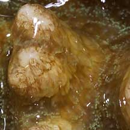 Usually covered in mucus. Pulau Hantu, May 05 |
|
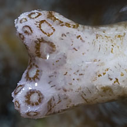 Pulau Hantu, Aug 13 |
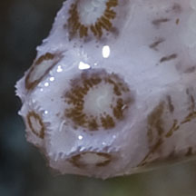 Corallites sunken, ringed by tiny bumps that stick out. |

|
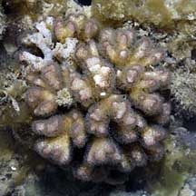 Pulau Semakau, Feb 08 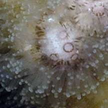 |
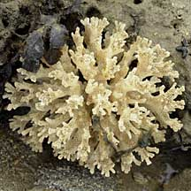 Terumbu Semakau, Jun 10 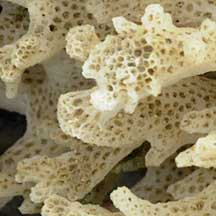 Recently dead bleached coral. |
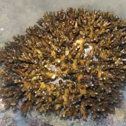 Kusu Island, Aug 04 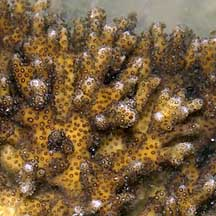 |
*Species are difficult to positively identify without close examination.
On this website, they are grouped by external features for convenience of display.
| Cauliflower corals on Singapore shores |
On wildsingapore
flickr
|
| Other sightings on Singapore shores |
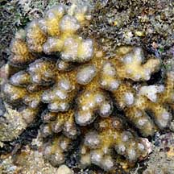 Pulau Biola, Dec 09 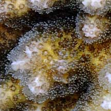 |
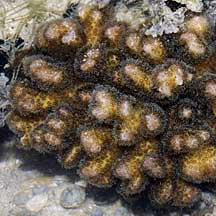 Pulau Pawai, Dec 09 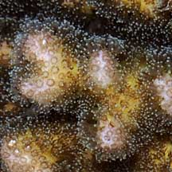 |
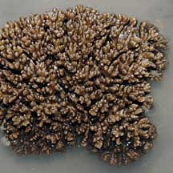 Pulau Sudong, Dec 09 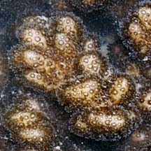 |
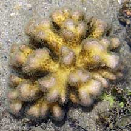 Terumbu Berkas, Jan 10 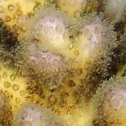 |
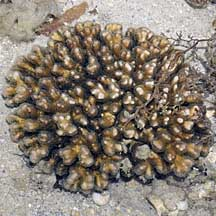 Terumbu Berkas, Jan 10 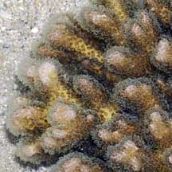 |
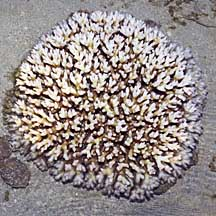 Pulau Berkas, May 10 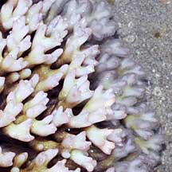 Bleaching. |
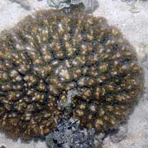 Pulau Salu, Aug 10 |
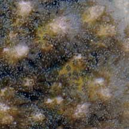 |
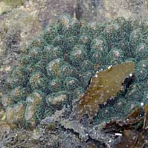 Pulau Biola, Dec 09 |
| Pocillopora
species recorded for Singapore from Danwei Huang, Karenne P. P. Tun, L. M Chou and Peter A. Todd. 30 Dec 2009. An inventory of zooxanthellate sclerectinian corals in Singapore including 33 new records **the species found on many shores in Danwei's paper. in red are those listed as threatened on the IUCN global list.
|
|
Links
References
|